The slide of the lecture is on the left, the same figure on the right, computed in the browser from the same data. The ▶ button moves the parameter step by step.
Digital Assets and Their Market · Stylised Facts of Crypto Returns · Crypto Indices: CRIX · Stablecoins · DeFi and Automated Market Makers · Spot ETFs and Crypto Equities · Are Cryptos Becoming Alternative Assets? · Case Study: Common Risk Factors in Cryptocurrency · AI for Scientific Discovery
Digital Assets and Their Market
Five Coins, One Dominant Asset
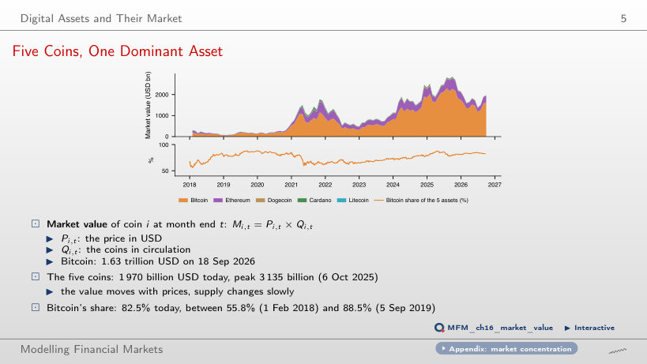
Answer
About 90.4%: 2 × 0.825 / (2 × 0.825 + 0.175) = 0.904. Constant quantities do not imply constant value weights. The 91.25% option adds half of the other coins' share instead of recalculating total market value. In the data, the Bitcoin share ranged between 55.8% (1 Feb 2018) and 88.5% (5 Sep 2019); on 18 September 2026 Ethereum holds 16.2%, and the five coins are worth 1,970 billion USD.
Stylised Facts of Crypto Returns
Volatility Over Time
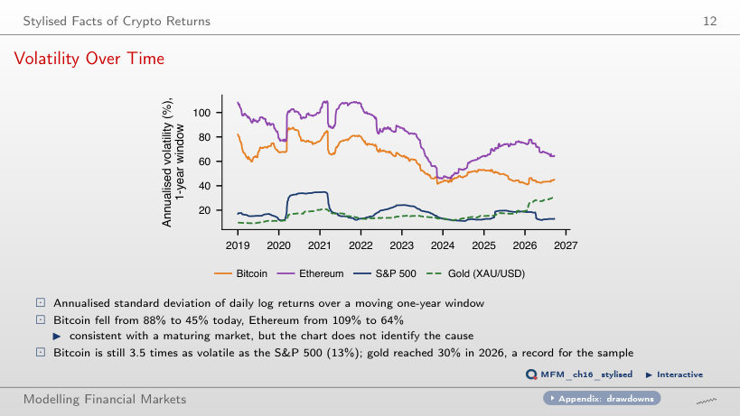
Answer
About 12.2. Variance is squared volatility: (45.1% / 12.9%)² ≈ 3.5² ≈ 12.2. The 3.5 option confuses variance with standard deviation; 1.9 takes another square root. Annualised Bitcoin volatility fell from its post-2019 maximum of 88% to 45%, and Ethereum volatility from 109% to 64%. The decline is consistent with a maturing market, but the chart does not identify a cause.
A 7-Day Market with a Weekend Lull
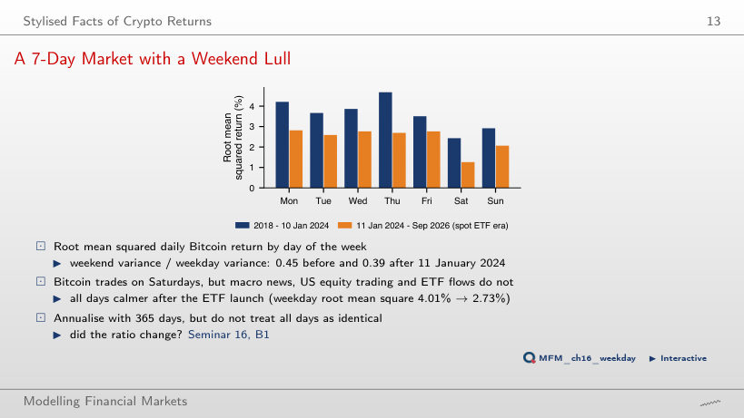
Answer
About 0.62: √0.39 ≈ 0.62. The 0.39 option retains the variance ratio; 1.60 reverses the comparison. Before 11 January 2024, the variance ratio is 0.45. The chart displays the root mean squared return by weekday, a distinct measure: on weekdays it falls from 4.01% to 2.73%. At weekends the US stock market is closed and there are no ETF flows; the before/after difference does not establish a causal ETF effect.
Is Bitcoin Moving with Shares?
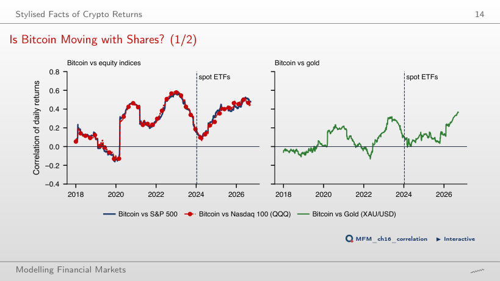
Answer
The increase predates the launch, and the comparison establishes timing, not a mechanism. In the separate regression of Bitcoin on S&P 500 returns, the sup-Wald test rejects no break in the coefficients (sup W = 20.12), and the date that minimises SSR is 9 March 2020. With gold, the correlation rises from −0.02 to 0.12 and then to 0.22.
Crypto Indices: CRIX
Crypto Indices Since 2018
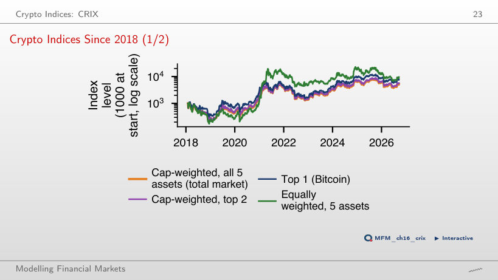
Answer
No. The difference is concentrated in 2021, when the equally weighted index rose by 998% and the cap-weighted index by 113%. Volatilities are 82.5% and 65.7%; CAGR is not a risk-adjusted measure. The five coins are chosen ex post among today's survivors: a shared universe does not remove the selection problem (survivorship bias).
Stablecoins
Deviations from 1 USD
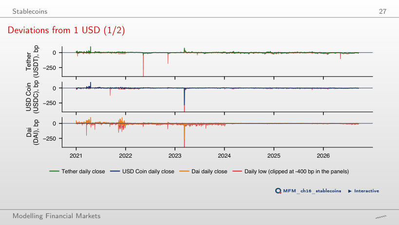
Answer
Days exceeding 100 bp are a subset of those exceeding 50 bp. Their counts fall from 3 to 1 for Tether, from 3 to 2 for USD Coin and from 12 to 3 for Dai, in 2021–2026. The standard deviation of the close is 7.3 bp, 7.5 bp and 10.8 bp respectively, but the tails are heavy: stress episodes are rare, not impossible. The counts use closing prices; the daily low of USD Coin was −1,226 bp, on 11 March 2023.
March 2023: a Bank Failure Hits USD Coin
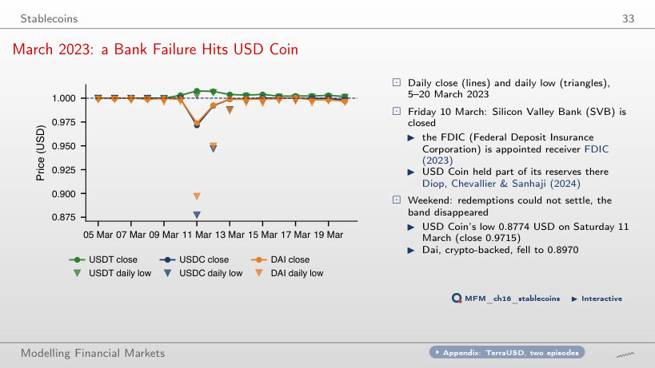
Answer
No. A price below USD 1 does not guarantee receipt of one dollar. Uncertainty about the reserves held at Silicon Valley Bank, closed on Friday, 10 March, and unavailable weekend settlement constrained the redemption mechanism that keeps the price within the band. The daily low, USD 0.8774, differs from the USD 0.9715 close. Dai, backed by crypto-assets, fell to USD 0.8970, while Tether stayed above the peg.
DeFi and Automated Market Makers
Total Value Locked in DeFi
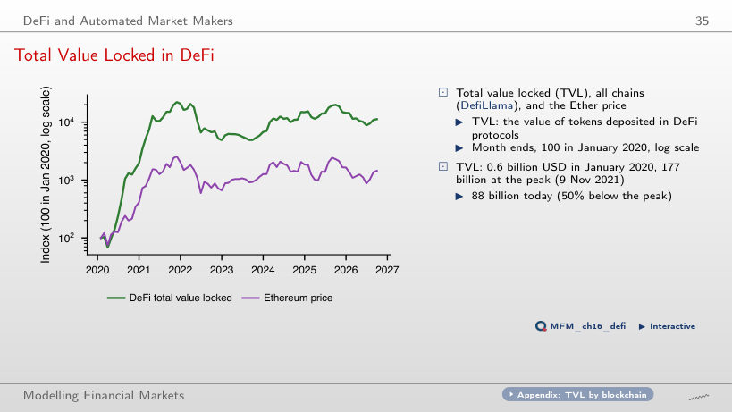
Answer
0.079 = 0.79 × 0.10. R² measures the fraction of sample variation explained, not the slope; the 0.062 option confuses the two. The 0.10 option assumes a one-for-one relationship. The estimate uses 79 complete months, with a Newey–West SE of 0.066. TVL is the value of the deposited tokens, so it moves mechanically with their prices; the regression does not identify a causal effect. TVL rose from 0.6 billion USD in January 2020 to 177 billion on 9 Nov 2021 and is 88 billion today.
A Liquidity Provider in an Ether Pool
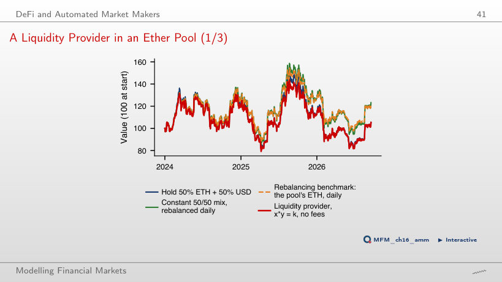
Answer
IL depends only on the ratio r of the final to the initial price and is zero at r = 1. LVR accumulates along the path, with every price change. In the sample, Ether ends at r = 1.11: the pool is worth 105.4, holding 105.5 (IL −0.14%) and the rebalancing benchmark 122.4. The realised LVR rate is 5.83% a year and the approximation σ²/8 is 5.79% (σ = 68.1%). The compounded fee rate that brings the pool to the benchmark's terminal value in the simulator is about 5.5% a year; these are different quantities.
Spot ETFs and Crypto Equities
IBIT Follows Bitcoin
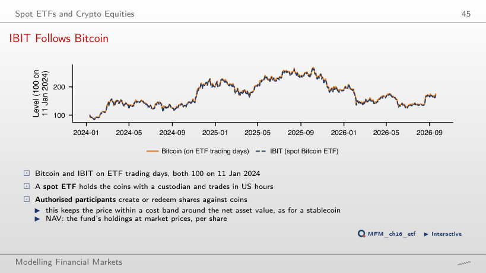
Answer
The log of the IBIT/Bitcoin ratio falls by 0.24% a year, close to the annual fee of 0.25%. On 18 September 2026, IBIT stands at 172.8 and Bitcoin at 174.5 (both 100 on 11 Jan 2024). ETHA has the same drift, −0.24% a year.
Daily vs Weekly Returns and the Dimson Beta
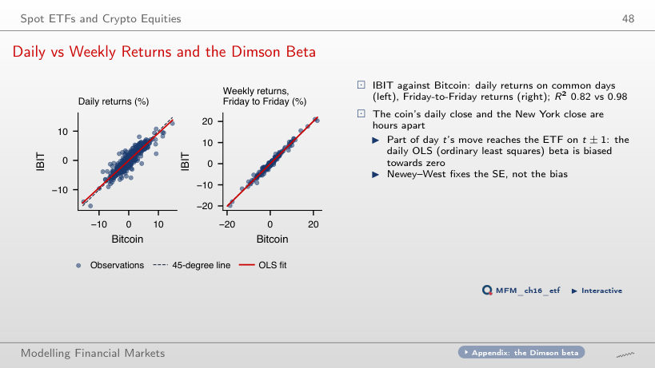
Answer
It rises from 0.82 to 0.99, and beta from 0.93 to 0.99, using 67 non-overlapping observations. The weekly panel uses Friday-to-Friday returns and gives R² = 0.98 and beta = 1.01. The daily close of the coin and the New York close are several hours apart, so part of the move of day t reaches the ETF on day t ± 1; the offset matters relatively less over longer horizons. R² does not rise at every step.
Are Cryptos Becoming Alternative Assets?
Cryptos Among Other Asset Classes
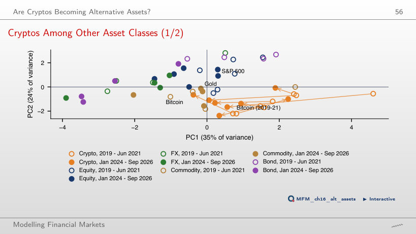
Answer
The estimate suggests convergence, but the interval does not exclude no change. The sign of the estimate does not establish significance, and including zero does not establish equality. The distance is measured in the space of the eight standardised features, not just in the PC1–PC2 projection: to equities it falls from 3.03 to 2.63, to commodities from 2.26 to 1.86, and the spread of crypto-assets around their centre from 2.13 to 1.43. The interval is indicative, because some features require finite moments that are questionable here, and it does not carry over to the variants with a feature left out, for which the bootstrap is not recomputed.
Case Study: Common Risk Factors in Cryptocurrency
Case Study: Table 1 Rebuilt on the Course Data
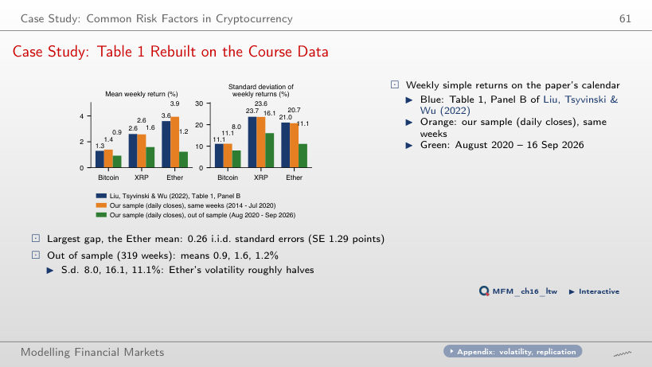
Answer
No. A same-week replication requires the paper's calendar, ending in July 2020; extending the sample changes the observations and may change the estimated moments. At the July 2020 split, the largest difference from Table 1, for the Ether mean, is 0.26 i.i.d. standard errors; this does not establish equality of the parameters. Out of sample (319 weeks), the weekly means are lower (Bitcoin 0.9%, XRP 1.6%, Ether 1.2%), and the standard deviation of Ether falls from 20.7% to 11.1%.
Case Study: Bitcoin Price and Hashrate, 2010–2026
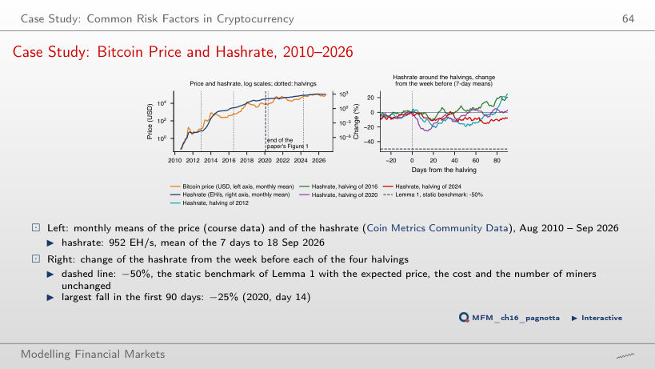
Answer
Not by itself. The −50% benchmark assumes linear costs, a halving of the reward, and unchanged expected price, unit cost and number of miners; the data include dynamic adjustment, fees and price changes. After 30 days, the USD reward per block had fallen by 45% (2012), 56% (2016), 48% (2020) and 52% (2024), while the hashrate changed by −10%, +4%, −5% and −8%. Day 30 does not describe the whole interval: on day 90 the hashrate is 25% (2012) and 20% (2016) above its pre-halving level. In levels, the elasticity to the USD reward per block, with a trend, is 1.19 in the paper's window and 0.03 after January 2020, a descriptive association; the Engle–Granger test does not reject no cointegration in either.
AI for Scientific Discovery
Mini-Case: Did the ETFs Break the Correlation?
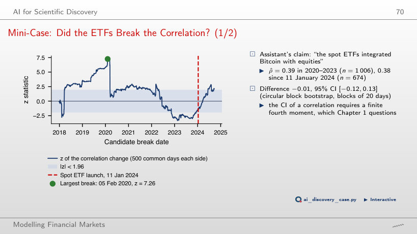
Answer
No. The scan considers 1,694 candidate dates with overlapping windows, and the maximum over these dates needs its own critical value. The ±1.96 band is pointwise and indicative under heavy tails and dependence. The maximum is on 5 February 2020; at the ETF date z = −1.48, and 82% of the candidate dates give a |z| at least as large. The scan is descriptive; the lecture's sup-Wald test concerns breaks in the regression coefficients and does not supply the critical value for this scan's maximum.
Daily EODHD prices (crypto-assets, stablecoins, ETFs, S&P 500, gold) up to 18 September 2026. Circulating supply of the coins: Coin Metrics Community Data. Total value locked (TVL): DefiLlama. Table 1: Liu, Tsyvinski and Wu (2022), Journal of Finance. Hashrate and coins issued per day: Coin Metrics Community Data; Lemma 1: Pagnotta (2022), Review of Financial Studies.